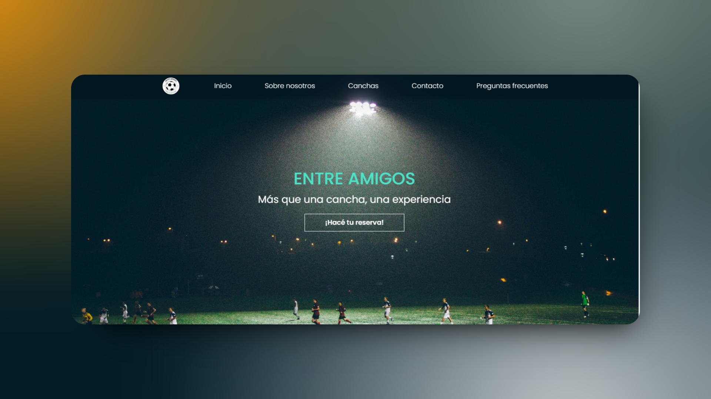
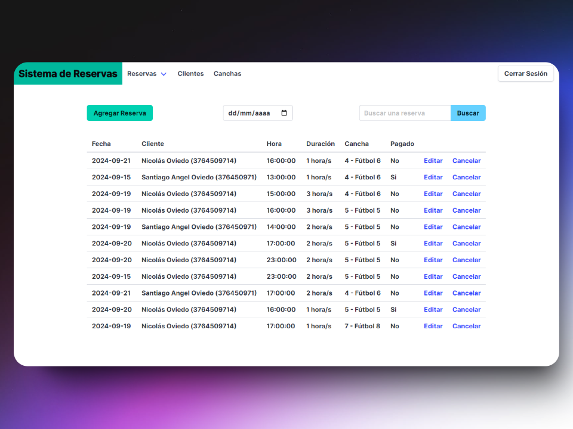
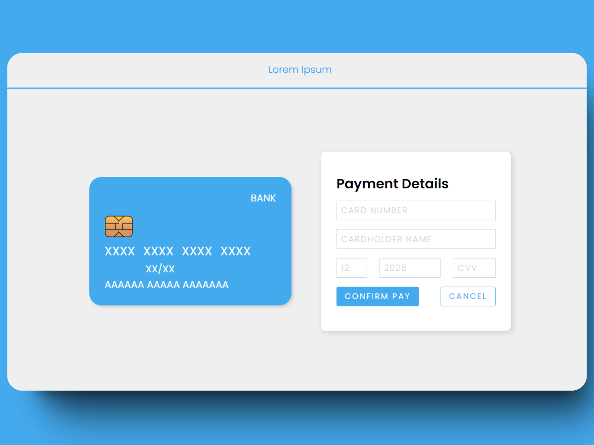

Analista de Sistemas con foco en desarrollo backend y automatización. Construyo herramientas reales en Python que integran APIs, procesan datos y optimizan operaciones en producción.
Soy Analista de Sistemas recibido con promedio de 9.16, actualmente trabajando como Sysadmin en la Universidad Gastón Dachary donde desarrollo automatizaciones Python en producción.
Mi perfil es principalmente backend y automatización: integro APIs con OAuth2, proceso datos estructurados, y construyo pipelines que reemplazan flujos manuales por procesos confiables y escalables.
Complemento esto con experiencia en infraestructura Linux, redes y virtualización — lo que me da contexto real sobre cómo el software corre en producción.
Pipeline de automatización completo que integra la API de Zoom y la API de YouTube con autenticación OAuth2. Descarga grabaciones, normaliza nombres y metadata, y las sube automáticamente sin intervención manual.

Herramienta interna para operaciones masivas sobre cuentas de correo vía cPanel API: creación desde CSV/Excel, generación automática de credenciales y notificaciones SMTP con templates.

Sistema fullstack para gestión de turnos de canchas deportivas con login, validaciones de disponibilidad, CRUD completo y filtros.

Colección de proyectos frontend de práctica: formulario de tarjeta de crédito con animaciones CSS, to-do app con filtros, y calculadora con modo oscuro persistente.
Estoy abierto a oportunidades en desarrollo backend, automatización o programación en general. No dudes en escribirme.